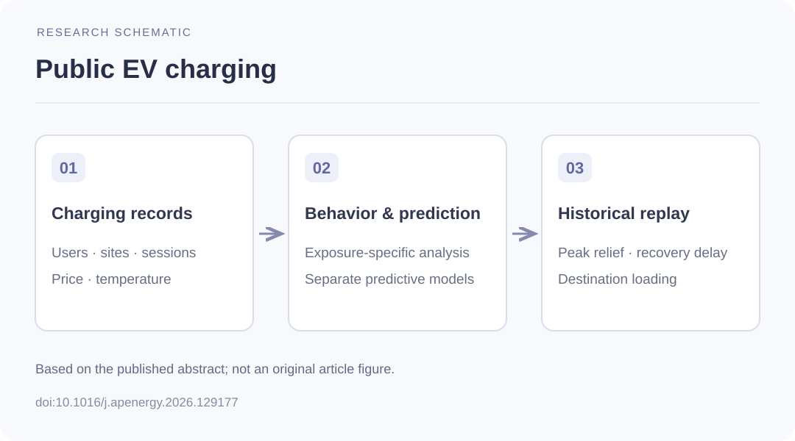

Research schematicApplied Energy
Public electric vehicle charging under price changes and ambient temperature: Behavioral heterogeneity and managed-charging trade-offs
427, Part F, 129177
Online 2026 · January 2027 issue
Other Research Explorations
Research overview
Research summary
Studies behavioral heterogeneity in 441,077 public charging sessions and evaluates managed-charging decisions in a 184-day retrospective replay. The analysis distinguishes price and temperature evidence from predictive screening and quantifies trade-offs among peak relief, recovery delay and destination loading.